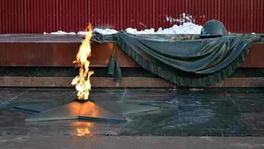
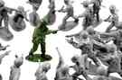

< < < Back
10 Things You Must Do If The Great War Breaks Out – Return Of Kings
Since last November, three words have been ringing in my head: “It is war.” What I hear around me is mainly about who will attack first. But the issue seems inevitable. It sounds just like the discussions at the eve of World War II, an elderly man told me. Add the recent Culture War Chat with its ominous forecast.
Then I hear about Baba Vanga, the blind “Nostradamus of the Balkans” and her prediction that “in 2016, there will be a Great Muslim War followed by the establishment of a caliphate, with Rome as its capital, in 2043.”
I don’t believe in psychics, only in what I see. But in these times of flag burning, tomb desecrating, and racially-motivated rape, better be safe than sorry. Islam is not my enemy, but the ones that attack me and my people on my soil are. It could be the Mongols, the Leftists, or The Vegan Front of Liberation for all I care.
So here are 10 things you will have to figure out in this eventuality:
1. Know what you fight for

Or if you will fight at all. This question kept me awake a few nights. Stay and fight for an ungrateful country or join a place where the lifestyle corresponds to what you envision and live an other day? You have to know if you have what it takes. Each man much prepare himself.
2. Determine your foes and your allies

The investigation on who you associate with should be thorough. Demand proof of their integrity. Not asking complete disclosure on the subject from your friends is taking a huge risk. See past differences with your possible allies and recognize the wolf in the sheep skin. Do not spend one more second of your precious time interacting with leftists, trying to convince them. They are lost, just burn the bridges.
3. Surround yourself with the worthy
Lead by example, reward faithful friends who uphold your values and cultivate their friendship. Weed out the paper tigers and keyboard warriors. Find a strong common denominator: faith, flag, freedom, neomasculinity, family, friends, the love for your land… The man next to you is what makes the difference between victory and defeat.
4. See your women and children as one of your most precious resources

Protect them physically and mentally. Educate them, now or in the future. Leave a legacy. No point losing your life in the struggle if the enemy will breed you out in a few generations. Roosh was right when he pointed out that “the future belongs to those who breed.”
5. Cut the sinews of war
Stop taking drugs. You are financing them and you are not in a state to fight. Stop eating their exotic fast food in street shops which are known to be easy ways to launder money. Stop financing corporations that represent what you fight against. Throw away your television. Stop buying global movies that promote the cultural decline. There are many more ways. Every dime counts
6. Remember that self defense starts with the mind
Quintus is right. You must detach yourself from the pre-digested information you have been fed with. Study your history and the one of your enemy. Investigate their goals and their social fabric. Know the odds.
Read books about the wars of old. History is bound to repeat itself. Get off social media, they know your every move. Unless it is for business, stay away from it.
One exchange from Merkel to Zuckerberg tells it all:
(To Zuckerberg) Are you working on this*? (*millions of anti-immigrants posts on Facebook)
“Yes!” – Mark Zuckerberg.
7. Perfect your physical shape and skills
Learn how to shoot, how to clean and disassemble a gun. Get an advanced first aid certificate. Study martial arts. Learn how to filter water and hunt. Survival techniques never hurt. Learn how to create improvised tools, weapons, and shelter. Examine and know your legal system. Develop your knowledge about the legislation on weapons of your country.
8. Realize that the enemy is everywhere among us

We have to resist on many fronts. The media and their brainwashed SJW lackeys, the government that does not want you to open your mouth, the footsoldiers… It is something that society has never encountered before. The enemy is disguised, all the laws of logics have been ignored and he walks freely among us. And he wants you dead.
9. Do your part

“A walking brute goes further than two sitting intellectuals.” Michel Audiard
Change the tendency. Act, write, expose politicians when they lie, bring people together, educate yourself, banish traitors. Do something, don’t wait for it to blow over. Yes, posting memes and sighing reading the paper shows your disapproval. But what does it actually do? Words are good, action is better.
The battlefield is everywhere. Stop procrastinating, time is one of our most precious resources.

While you post memes, Sergei is in Latakia, dropping Vladimir’s Christmas presents to ISIS
Want to get in the thick of it? Join the Russian army (they now accept foreigners) or the Peshmergas (Kurdish forces) instead of believing in the smoke screen “drone attacks” launched by leftists leaders on empty warehouses.
French volunteers fighting ISIS with the Peshmergas
10. Understand that the Western elites will not help you
Their worst nightmare would be strong, nationalist, culturally homogenous societies with a common history. More migrants, muticulturalism, and gay propaganda equals more votes for the left. It stays in place with a divided population, easy to control.
Understand that they stand for nothing and would sell their mother (and even deliver her for a few more shekels).
I vow to do my part. Will you?
Read More: 8 Things To Expect When Dating A Muslim Girl